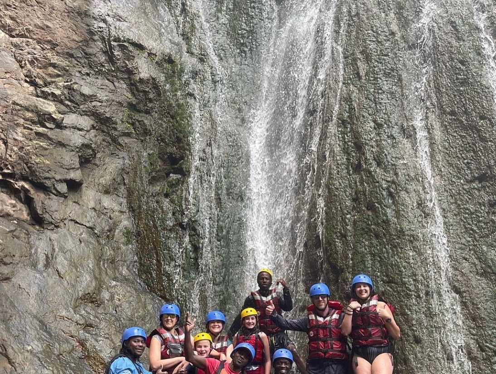

My Experiences
Anna is all about embracing new experiences and diving into the unknown with excitement! Whether it’s learning a new skill, exploring a different place, or stepping out of her comfort zone, she sees every opportunity as a chance to grow and have fun. For Anna, life is an adventure meant to be explored, one bold, thrilling, and unforgettable moment at a time!
Not only does Anna have experience in the computer science realm... Anna is a globe-trotting explorer, always ready for her next adventure! From bustling cities to remote landscapes, she loves immersing herself in new cultures, trying delicious local foods, and soaking up every experience the world has to offer. Having already set foot on four continents and visited over ten countries, she’s just getting started—there’s a whole world out there, and Anna can’t wait to see it all!
In the pictures above, the 1st picture is Ann's family in Iceland standing on a glacier. The 2nd picture, is Anna a missionary in Argentina, and the 3rd picture is Anna with a goup of friends at Machu Pichu in Peru!
Anna is always up for an adventure, whether it’s tasting something wild—like intestines or zebra—or chasing the next adrenaline rush! She thrives on new experiences, from conquering rapids while white water rafting (including the mighty Zambezi River!) to taking the plunge with a bungee jump. If it’s exciting, outdoors, and full of fun, Anna is all in—because life is meant to be lived to the fullest!
In the the the right, this is Anna and her family stopping to see a waterfall on the way down the Zambezi River in Africa
Anna is a people person through and through! She loves meeting new faces, sharing stories, and making every moment more fun with her energy and enthusiasm. Whether she’s deep in conversation, cracking jokes, or just enjoying the company of others, she has a way of making everyone feel welcome. Being around Anna means good vibes, great conversations, and plenty of laughter!

In the picture above, this is Anna and some of her friends having a great time hammocking!